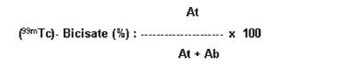

RÉSUMÉ DES CARACTÉRISTIQUES DU PRODUIT
ANSM - Mis à jour le : 18/03/2011
NEUROLITE, trousse pour la préparation de la solution injectable de (99mTc) - bicisate
2. COMPOSITION QUALITATIVE ET QUANTITATIVE
Le flacon A contient 900 µg de dichlorhydrate de bicisate et 72 µg de Chlorure stanneux dihydraté.
Le flacon B contient le solvant.
Après reconstitution de NEUROLITE avec une solution injectable, stérile et apyrogène de (99mTc) pertechnétate de sodium, le complexe Tc-99m N,N'(1,2-ethylenediyl) bis-L-cysteine diéthyl ester (99mTc) bicisate est formé.
Pour la liste complète des excipients, voir rubrique 6.1.
Poudre et solvant pour usage parentéral, trousse pour préparation de la solution injectable de (99mTc)-bicisate.
4.1. Indications thérapeutiques
Ce médicament est à usage diagnostique uniquement.
La scintigraphie au (99mTc)-bicisate est indiquée dans l'évaluation des anomalies de la perfusion régionale cérébrale chez les patients atteints d'affections du système nerveux central.
4.2. Posologie et mode d'administration
Après marquage avec une solution injectable de (99mTc) pertechnétate de sodium, l'activité à administrer en injection intraveineuse chez un sujet de 70 kg est de 740 MBq. La scintigraphie devra être faite dans les 6 heures qui suivent l'administration.
Si nécessaire, une activité plus élevée jusqu'à 1700 MBq peut être injectée à condition que le patient soit capable d'uriner au moins toutes les 2 heures.
Immédiatement avant administration au patient, l'activité à injecter doit être mesurée à l'aide d'un système de mesure approprié.
Il est recommandé de vérifier la pureté radiochimique avant de pratiquer l'injection.
Hypersensibilité au principe actif ou à l'un des excipients.
4.4. Mises en garde spéciales et précautions d'emploi
Les produits radiopharmaceutiques ne doivent être utilisés que par des personnes qualifiées. Ils ne peuvent être délivrés qu'à des praticiens ayant obtenu l'autorisation spéciale prévue à l'article R 1333-24 du Code de la Santé Publique. Le contenu des flacons est uniquement prévu pour la préparation du (99mTc)-bicisate et ne doit pas être administré directement aux patients sans avoir subi auparavant la procédure de marquage.
Comme tout radiotraceur, le (99mTc)-bicisate doit être manipulé avec précaution, des mesures de sécurité appropriées devant être appliquées pour minimiser l'exposition aux radiations du personnel hospitalier et des patients.
La tolérance et l'efficacité du produit n'ont été étudiées ni chez les sujets de moins de 18 ans, ni chez l'insuffisant rénal.
Lorsque le débit sanguin cérébral est supérieur aux valeurs normales, la fixation cérébrale mesurée peut entraîner une sous estimation du débit sanguin cérébral. Le (99mTc)-bicisate peut sous-estimer les valeurs de DSC élevées.
4.5. Interactions avec d'autres médicaments et autres formes d'interactions
Aucune connue à ce jour.
Aucune étude de reproduction animale n'a été réalisée avec le (99mTc)-bicisate. De même qu'aucune étude n'a été effectuée chez la femme enceinte.
Quand il est nécessaire d'administrer des produits radioactifs à la femme susceptible de procréer, une grossesse éventuelle doit toujours être recherchée. Toute femme ayant un retard de règles doit être présumée enceinte jusqu'à preuve du contraire. Quand il existe un doute, il est important que l'exposition aux radiations soit minimale compte tenu de l'information clinique souhaitée. On envisagera d'autres examens ne mettant pas en jeu de radiations ionisantes.
L'utilisation de radioéléments chez la femme enceinte provoque une irradiation du fœtus.
Seuls les examens indispensables seront effectués pendant la grossesse, quand le bénéfice attendu est supérieur aux risques encourus par la mère et le fœtus.
Avant administration de produit radioactif à la femme allaitante, il faut envisager si le report de l'examen jusqu'au sevrage et reconsidérer le choix du radiopharmaceutique en tenant compte de son excrétion dans le lait maternel. Si l'administration est jugée nécessaire, l'allaitement doit être suspendu pendant les 12 heures qui suivent l'administration et le lait produit pendant cette période doit être éliminé. L'allaitement pourra être repris lorsque l'activité présente dans le lait ne risque pas d'entraîner une dose d'irradiation de l'enfant supérieure à 1 mSv.
4.7. Effets sur l'aptitude à conduire des véhicules et à utiliser des machines
L'administration de (99mTc)-bicisate pour un examen d'imagerie à visée diagnostique n'a aucune incidence sur la capacité à conduire un véhicule et à utiliser des machines.
Les effets indésirables rapportés lors des essais cliniques avec Neurolite (1022 patients) étaient transitoires et d'intensité faible à modérée.
Au cours du programme d'essais cliniques, 5,9 % des patients ont présenté un effet indésirable. Les effets indésirables les plus fréquemment rapportés sont des maux de tête (1,0 %) et une agitation (0,5 %).
La fréquence des effets indésirables listés ci-dessous est définie par la convention suivante:
Très fréquent (≥1/10); fréquent (≥1/100, <1/10); peu fréquent (≥1/1000, <1/100); rare (≥1/10000, <1/1000); très rare (<1/10000).
|
Affections du système nerveux: |
Fréquent: maux de tête |
|
|
|
Peu fréquent: agitation, convulsions, parosmie (se manifestant par une légère odeur aromatique et transitoire), somnolence, hallucinations, anxiété, sensations vertigineuse |
|
|
Affections cardiaques: |
Peu fréquent: angor, insuffisance cardiaque |
|
|
Affections vasculaires: |
Peu fréquent: syncopes, hypertension |
|
|
Affections respiratoires, thoraciques et médiastinales: |
Peu fréquent: apnée, cyanose |
|
|
Affections gastro-intestinales: |
Peu fréquent: constipation, nausées, dyspepsie, diarrhée |
|
|
Affections de la peau et du tissu sous-cutané: |
Peu fréquent: éruption transitoire |
|
|
Troubles musculo-squelettiques et systémiques: |
Peu fréquent: douleurs dorsale |
|
|
Troubles généraux et anomalies au site d'administration: |
Peu fréquent: malaise |
Après la commercialisation, de rares cas de réactions allergiques modérées à sévères, de type anaphylaxie, ont été rapportées.
Pour chaque patient, l'exposition aux radiations ionisantes doit être justifiée par le bénéfice attendu. L'activité administrée doit être telle que la dose d'irradiation qui en résulte soit aussi faible que possible compte tenu du diagnostic ou du résultat thérapeutique attendu.
L'exposition aux radiations ionisantes peut induire un processus néoplasique et potentialiser l'apparition de malformations chromosomiques.
Pour les examens de médecine nucléaire à visée diagnostique, la fréquence des effets indésirables sera faible en raison des doses délivrées.
Dans la plupart des examens à visée diagnostique pratiqués en médecine nucléaire, la dose de radiation délivrée est inférieure à 20 mSv (dose efficace E). Dans certains cas des doses plus élevées peuvent être justifiées.
L'utilisation diagnostique d'un radiopharmaceutique ne peut entraîner de surdosage au sens pharmaceutique.
Cependant, afin de minimiser l'exposition aux radiations, il faut demander aux patients de boire abondamment et d'uriner fréquemment.
5. PROPRIETES PHARMACOLOGIQUES
5.1. Propriétés pharmacodynamiques
Code ATC: V09AA02.
Préparation radiopharmaceutique pour scintigraphie cérébrale.
Les faibles concentrations administrées ne sont pas susceptibles d'exercer des effets pharmacodynamiques.
5.2. Propriétés pharmacocinétiques
Après reconstitution de NEUROLITE par addition du (99mTc) pertechnétate de sodium, il se forme le complexe Tc-99m N, N(1,2-éthylènediyl)bis-L-cystéine diéthyl ester (99mTc)-bicisate.
Le (99mTc)-bicisate peut exister sous quatre formes énantiomères différentes en raison de la configuration du bicisate. Des études ont démontré que seul le dérivé L, L est retenu et métabolisé par l'encéphale de façon stéréo-sélective. A l'opposé, l'isomère D, D marqué au technétium traverse la barrière hémato-encéphalique et est extrait par le cerveau, mais il n'est ni fixé, ni métabolisé dans des proportions appréciables. C'est pourquoi, seule la forme L, L est présente dans le NEUROLITE.
Des études conduites chez le volontaire sain ont montré que la fixation initiale du (99mTc)-bicisate par le cerveau est de 4,8 à 6,5 % de l'activité administrée, quelques minutes seulement après l'injection. La fixation et la rétention du (99mTc)-bicisate par le cerveau sont suffisantes pour permettre d'obtenir une image en tomoscintigraphie par émission monophotonique (TEMP) immédiatement après administration. Le (99mTc)-bicisate s'élimine très lentement du cerveau. Sa répartition dans l'encéphale reste stable pendant au moins six heures après l'injection. Cette répartition est comparable à celle observée avec le xénon-133, produit de référence pour l'étude du débit sanguin cérébral.
Le (99mTc)-bicisate s'élimine rapidement du sang circulant. Une heure après administration, il reste dans le sang moins de 5 % de l'activité injectée. Cinq minutes après injection, la plus grande partie de l'activité du sang veineux est due à la présence de métabolites. En moyenne, 74 % de l'activité administrée sont excrétés dans les urines au cours des premières 24 heures suivant l'injection et jusqu'à 50 % dans les deux premières heures.
Etant donné que la paroi vésicale est l'organe critique en terme d'irradiation et que l'élimination urinaire du (99mTc)-bicisate est rapide, il est possible de réduire la dose délivrée en augmentant la fréquence des mictions. Ni le (99mTc)-bicisate, ni ses métabolites ne sont liés aux protéines plasmatiques.
Chez l'homme, comme avec d'autres radiotraceurs cérébraux marqués au technétium-99mTc, qu'une valeur de débit sanguin supérieure aux valeurs physiologiques normales pouvait entraîner une sous-estimation du débit relatif avec le (99mTc)-bicisate.
La pharmacocinétique du (99mTc)-bicisate chez les patients présentant des troubles neurologiques n'a pas été étudiée. Cependant, la stabilité de la distribution intracérébrale d'une injection unique de bicisate (99mTc) a été étudiée chez de tels patients en tomoscintigraphie par émission monophotonique (TEMP). Les images obtenues montrent, comme chez les sujets neurologiquement sains, une distribution intracérébrale stable dans le temps.
5.3. Données de sécurité préclinique
Les études de la toxicité d'une dose unique ou de doses réitérées, effectuées chez les rongeurs, le chien et le singe, n'ont révélé aucun signe de toxicité de NEUROLITE même avec une posologie atteignant 123 à 5882 fois la dose maximale humaine (DMH). Chez le lapin, le produit administré par voie intraveineuse a provoqué une irritation locale discrète et réversible et, par voie périvasculaire, une légère irritation.
Les effets sur la reproduction et le pouvoir tératogène du (99mTc)-bicisate n'ont fait l'objet d'aucune étude chez l'animal.
Il n'y a pas eu non plus d'études prolongées chez l'animal destinées à évaluer le pouvoir carcinogène ou à rechercher un effet du (99mTc)-bicisate sur la fertilité chez le mâle ou la femelle.
Les résultats des tests précliniques indiquent que la préparation NEUROLITE n'est pas mutagène in vitro et que son principe actif, le dichlorhydrate de bicisate, n'est pas mutagène in vivo. Ces résultats suggèrent l'absence de risque mutagène de NEUROLITE dans les conditions d'utilisation prévues.
Edétate disodique, mannitol, acide chlorhydrique, oxygène (espace de tête).
Flacon B
Phosphate disodique heptahydraté, phosphate monosodique monohydraté, eau pour préparations injectables.
Les flacons ne contiennent pas de conservateur antimicrobien.
Les réactions de marquage par le technétium nécessitant le maintien de l'ion stanneux à l'état réduit, il ne faut pas utiliser de solution injectable de (99mTc) pertechnétate de sodium contenant des oxydants.
Afin de préserver la stabilité du complexe technetié, les préparations de (99mTc) ne doivent pas être associées à d'autres préparations ou composants.
Durée de conservation de la trousse: 18 mois.
Durée de conservation après reconstitution à l'aide de solution injectable de (99mTc) pertechnétate de sodium: 8 heures à une température inférieure à 25°C.
6.4. Précautions particulières de conservation
Le produit doit être conservé à une température inférieure à 25°C dans son flacon d'origine.
Avant reconstitution, les constituants de la préparation ne sont pas radioactifs. Une fois ajoutée la solution injectable de (99mTc) pertechnétate de sodium, il est en revanche nécessaire de conserver la préparation finale dans un conteneur de protection adéquat.
Le produit reconstitué doit être conservé à une température inférieure à 25°C.
6.5. Nature et contenu de l'emballage extérieur
Flacon de verre borosilicate Type I, de 5 mL, obturé avec un bouchon en halobutyle recouvert d'une capsule en aluminium sertie.
6.6. Précautions particulières d’élimination et de manipulation
Tout produit non utilisé ou déchet doit être éliminé conformément à la réglementation en vigueur.
7. TITULAIRE DE L’AUTORISATION DE MISE SUR LE MARCHE
LANTHEUS MI UK LTD
FESTIVAL HOUSE
39 OXFORD STREET
NEWBURY, BERKSHIRE RG14 1 JG
ROYAUME-UNI
8. NUMERO(S) D’AUTORISATION DE MISE SUR LE MARCHE
· 558 375-6: 25 mg en flacon (verre) et 1 mL de solution tampon en flacon (verre). Boîte de 1.
· 558 376-2: 25 mg en flacon (verre) et 1 mL de solution tampon en flacon. Boîte de 5.
9. DATE DE PREMIERE AUTORISATION/DE RENOUVELLEMENT DE L’AUTORISATION
[à compléter par le titulaire]
10. DATE DE MISE A JOUR DU TEXTE
[à compléter par le titulaire]
Le résultat des calculs dosimétriques réalisés pour un patient d'un poids moyen (70 kg) après injection intraveineuse de (99mTc)-bicisate est le suivant:
Doses de radiations absorbées à partir du (99mTc)-bisicate
|
|
Equivalence de dose (mGy/MBq)(1) |
|
|
|
Après administration de 1700 MBq (miction toutes les 2 heures) |
Après administration de 700 MBq (miction toutes les 4,8 heures) |
||
|
ORGANES |
|||
|
Cerveau |
5,53 10-3 |
5,40 10-3 |
|
|
Paroi de la vésicule biliaire |
2,44 10-2 |
2,45 10-2 |
|
|
Paroi de la partie distale du côlon |
1,27 10-2 |
1,50 10-2 |
|
|
Paroi de la partie proximale du côlon |
1,65 10-2 |
1,68 10-2 |
|
|
Intestin grêle |
9,43 10-3 |
1,01 10-2 |
|
|
Reins |
7,27 10-3 |
7,20 10-3 |
|
|
Foie |
5,28 10-3 |
5,40 10-3 |
|
|
Poumons |
2,04 10-3 |
1,75 10-3 |
|
|
Ovaires |
5,94 10-3 |
7,74 10-3 |
|
|
Moelle osseuse |
2,34 10-3 |
2,34 10-3 |
|
|
Surface des os |
3,50 10-3 |
3,65 10-3 |
|
|
Testicules |
2,16 10-3 |
3,65 10-3 |
|
|
Tyroïde |
3,50 10-3 |
3,65 10-3 |
|
|
Paroi vésicale |
2,97 10-2 |
7,16 10-2 |
|
|
Corps entier |
2,40 10-3 |
2,92 10-3 |
|
La dose efficace pour le bicisate de technétium est de 13,6 mSv pour une activité maximum de 1700 MBq et des intervalles de miction de 2 heures. Avec une activité de 700 MBq et une miction à 4,8 heures, la dose efficace est de 7,7 mSv.
Caractéristiques physiques du radionucléide utilisé pour le marquage:
Le pertechnétate de sodium injectable est produit par un générateur approprié. Le technétium Tc-99m se désintègre avec une émission de radiation gamma (énergie 141 keV) et une demie-vie de 6 heures qui peut être considérée comme stable.
(1)Dosimétrie calculée selon CIRP 60.
12. INSTRUCTIONS POUR LA PREPARATION DES RADIOPHARMACEUTIQUES
Précaution
L'administration de radiopharmaceutiques peut entraîner des risques pour les utilisateurs (marquage du (99mTc)-bicisate, urines ou vomissements émis par le patient...).
Des mesures de protection seront prises en accord avec la réglementation nationale.
Préparation
La préparation du (99mTc)-bicisate à partir de la trousse doit être réalisée de façon aseptique selon les étapes suivantes:
· Avant d'ajouter la solution injectable de (99mTc) pertechnétate de sodium au flacon B (flacon contenant la solution tampon), noter l'activité estimée, ainsi que la date et l'heure de la préparation, à l'endroit prévu à cet effet sur l'étiquette du flacon. Détacher ensuite une étiquette portant le symbole de radioactivité et la fixer autour du col du flacon.
· Porter des gants imperméables pendant la préparation. Enlever la rondelle en plastique de chacun des deux flacons et désinfecter la surface des bouchons à l'alcool.
· Placer le flacon B dans un conteneur blindé approprié portant une étiquette destiné à indiquer la date, l'heure de la préparation, le volume et l'activité.
· Utiliser une seringue blindée stérile pour ajouter au flacon B, de façon aseptique, environ 2 mL de solution injectable, stérile et apyrogène, de (99mTc) pertechnétate de sodium (3,70 GBq) sans oxydant. Sans enlever l'aiguille, soustraire un volume d'air équivalent afin de rétablir dans le flacon la pression atmosphérique.
· A l'aide d'une seringue stérile, injecter rapidement 3 mL de chlorure de sodium (solution injectable, 0,9 % NaCl, sans bactériostatique) dans le flacon A (le flacon contenant le lyophilisat) pour en dissoudre le contenu. Sans enlever l'aiguille, soustraire un volume d'air équivalent afin de rétablir dans le flacon la pression atmosphérique. Agiter le flacon pendant quelques secondes.
· A l'aide d'une autre seringue stérile, transférer immédiatement (dans les 30 secondes au plus) 1 mL du flacon A au flacon B.
· Mélanger le contenu du flacon B pendant quelques secondes, puis laisser reposer le mélange à température ambiante pendant trente (30) minutes.
· Avant injection, examiner le contenu du flacon B pour vérifier l'absence de particules et de changement de couleur. NE PAS UTILISER la préparation en cas de doute.
· Mesurer la radioactivité du flacon B au moyen d'un système de mesure approprié. Sur l'étiquette spécifique du conteneur blindé, noter la concentration de technétium (99mTc), le volume total, l'heure et la date de la mesure, la date de la péremption et le numéro du lot. Fixer cette étiquette sur le conteneur.
· Conserver le flacon contenant le (99mTc)-bicisate à température inférieure à 25°C jusqu'à utilisation; le produit doit alors être prélevé de façon aseptique. Le flacon ne contient aucun conservateur.
· Les déchets doivent être traités selon la réglementation nationale concernant les matériaux radioactifs.
Note: il est recommandé de suivre le mode opératoire ci-dessus pour reconstituer le produit. Le produit doit être utilisé dans les 8 heures qui suivent la reconstitution.
Détermination de la pureté radiochimique par chromatographie en couche mince (CCM)
La vérification de la qualité du marquage doit être effectuée selon le mode opératoire décrit ci-dessous:
Matériel
· Plaques de gel de silice 2,5 x 7,5 cm
· Solvant: acétate d'éthyle pour CLHP
· Activimètre ou compteur gamma
· Petite cuve de chromatographie
· Seringue et flacons blindés, en fonction des besoins.
Mode opératoire
Déterminer la pureté radiochimique de la solution finale par chromatographie en couche mince (CCM) au moyen de plaques de gel de silice en utilisant de l'acétate d'éthyle comme solvant.
Verser dans la cuve de l'acétate d'éthyle en quantité suffisante pour obtenir une hauteur de solvant de 3 à 4 mm. Recouvrir la cuve et attendre 15 à 30 minutes pour que le solvant sature l'atmosphère de la cuve. Il est important de respecter la phase de saturation et l'équilibre dans la cuve de chromatographie, afin de garantir la reproductibilité de la CCM.
Note: l'acétate d'éthyle est irritant pour la peau et les muqueuses et doit être manipulé sous hotte aussi souvent que possible.
Tracer avec un crayon des traits peu appuyés sur la plaque de CCM, à deux (2), quatre et demi (4,5) et sept (7) centimètres du bas de la plaque. Déposer environ 5 µl de la solution à injecter au centre de la plaque sur le trait situé à 2 cm. Pour ce faire, on peut utiliser une seringue munie d'une aiguille de 0,4 mm ou 0,5 mm en tenant la seringue en position verticale et en attendant qu'une goutte se forme. Le diamètre de la goutte déposée ne doit pas être supérieur à 10 mm. Laisser sécher la goutte sans attendre plus que 5 à 10 minutes
Placer la plaque dans la cuve de CCM et laisser migrer le front du solvant jusqu'au trait tracé à 7 centimètres (15 minutes environ). Enlever la plaque et laisser sécher dans une zone bien ventilée.
Calcul
Couper la plaque de CCM le long du trait situé à 4,5 cm au moyen de ciseaux. Utiliser un activimètre ou un compteur gamma pour mesurer l'activité. La partie supérieure contient le (99mTc)-bicisate et la partie inférieure contient toutes les impuretés radioactives.
Calculer la pureté radiochimique à l'aide de l'équation suivante:

Où At = activité de la partie supérieure
Ab = activité de la partie inférieure
Critères
Le Rf du (99mTc)-bicisate est de 0,9 + 0,1; le colloïde, le TcO4- et le (99mTc) EDTA ne migrent pas. Si la pureté radiochimique est inférieure à 90 %, ne pas utiliser la trousse et jeter la préparation.
Liste I.
Médicament réservé à l'usage hospitalier.
Les produits radiopharmaceutiques ne doivent être utilisés que par des personnes qualifiées. Ils ne peuvent être délivrés qu'à des praticiens ayant obtenu l'autorisation spéciale prévue à l'article R 1333-24 du code de la Santé Publique.